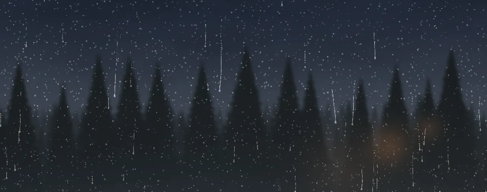

Live scenes
Pick a scene. Sound starts only when you turn it on.
-

Rain on the Cabin Window
Rain on a dark cabin window at night, drawn live in your browser by our own code.
The full films are on the Greenfield Ambience channel.
Pick a scene. Sound starts only when you turn it on.

Rain on a dark cabin window at night, drawn live in your browser by our own code.
The full films are on the Greenfield Ambience channel.